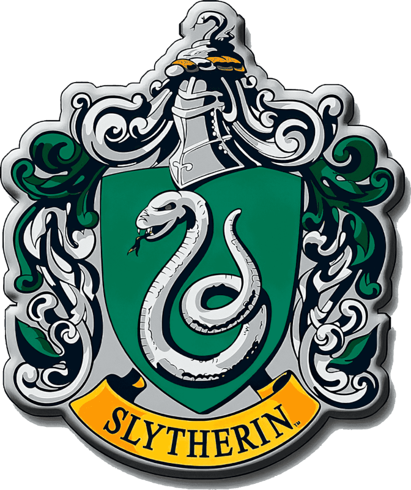
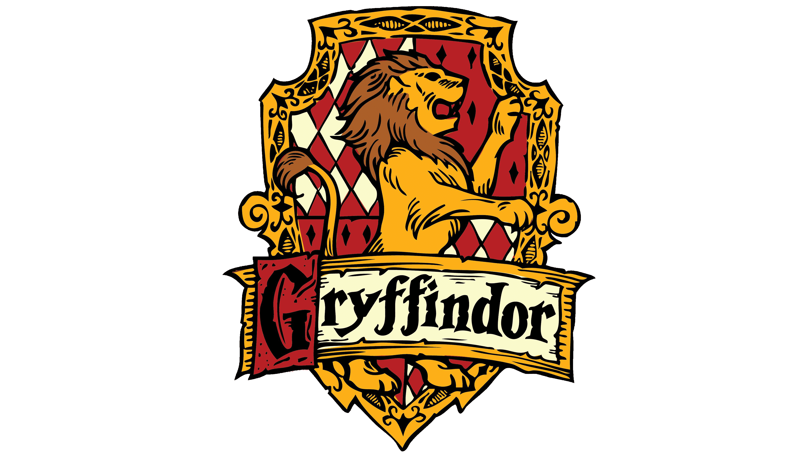
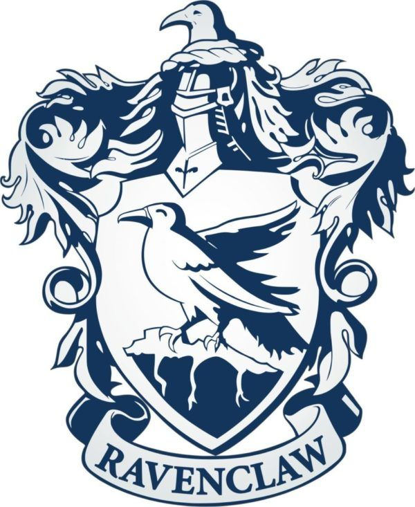
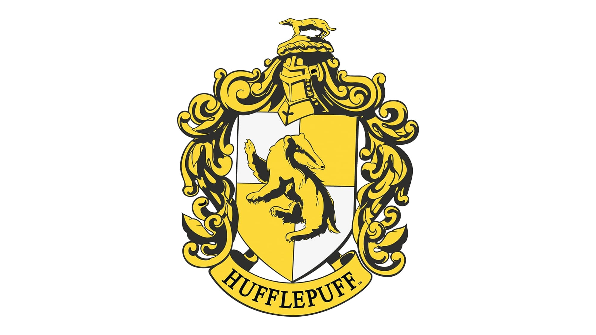

Harry Potter Character Info
Character
Job Statues
House
Blood Statues
Parents
War Support
Narcissa Malfoy
Stay at home wife/mother
Slytherin

Pure-blood
Mother- Druella Rosier
Father- Cygnus Black
Death Eater
Sirius Black
Felon
Gryffindor

Pure-Blood
Mother- Walburga Black
Father- Orion Black
Order of the Phoenix
Rita Skeeter
Reporter/Journalist
N/A
Pure-Blood
Mother- N/A
Father- N/A
Order of the Phoenix
Luna Lovegood
Student
Ravenclaw

Pure-Blood
Mother- Pandora Lovegood
Father- Xenphilius Lovegood
Order of the Phoenix
Nymphadora Tonks
Auror
Hufflepuff

Half-Blood
Mother- Andromeda Black
Father- Edward Tonks
Order of the Phoenix
Tom Riddle
Leader of the Death Eaters
Slytherin
Half-Blood
Mother- Merope Gaunt
Father- Tom Riddle
Death Eater
Aurelius Dumbledore
Grindelwald's Acolyte
N/A
Half-Blood
Mother- N/A
Father- Aberfotrth Dumbledore
N/A